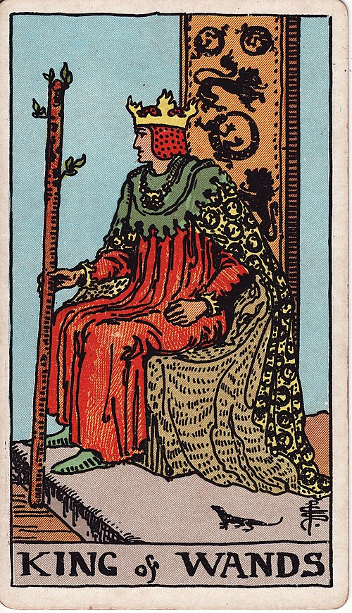

| Arcana | Minor |
| Suit | Wands |
| Element | Fire |
| Attribution | Fire of Fire |
King of Wands
In shortDecide the direction and say it out loud.
Upright
This is vision plus the authority to make it happen — the founder, the director, the person who can see where this could go and get others to go there. Decisive, sometimes impatient, effective. As advice: take charge of the direction, state it clearly, and then let people get on with the work.
Reversed
Leadership curdles into ego. Decisions made to prove who is in charge, impatience with anyone slower, big plans announced and never funded. It can also mean a leader who has lost the plot — or your own reluctance to step into a role you are ready for.
The turn
Decide the direction and say it plainly. Ambiguity from the top is expensive.
Reading with your own deck?
Sage records the cards you actually pull, writes the reading, keeps every one, and shows you what keeps returning across them. Free, private, no account.